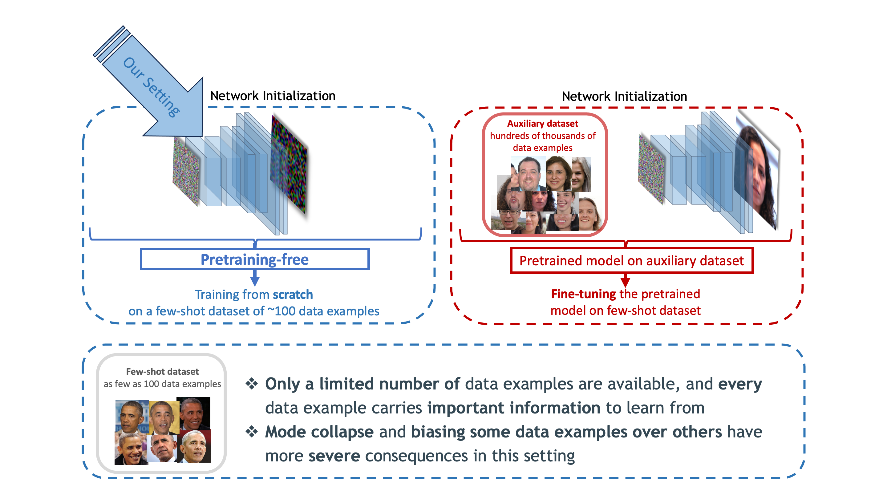
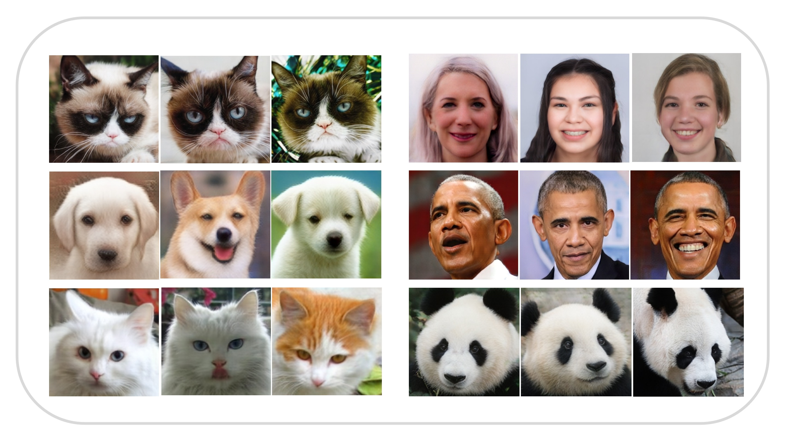
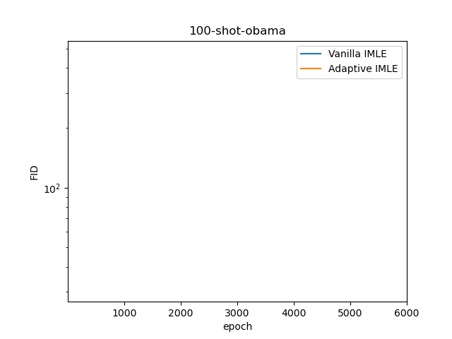

Mehran Aghabozorgi, Shichong Peng, Ke Li
APEX Lab, Simon Fraser University
Overview
We present Adaptive IMLE, a generative modeling approach that covers all the modes and produces high-quality results. Adaptive IMLE is capble of learning from a few samples from scratch without any auxiliary datasets.
We apply our method to the challenging task of few-shot unconditional image generation with as few as 100 data examples.

Results
Adaptive IMLE generates high-quality images:

Smooth and meaningful interpolation:
Adaptive IMLE trains fast and stably!

We compare Adaptive IMLE with recent GAN and Diffusion based models:


In the following figure, we can see how the Adaptive IMLE algorithm shrinks neighbourhoods around data points in a toy example. You can find a jupyter notebook that includes a basic implementation of Adaptive IMLE here.

Citation
@inproceedings{aghabozorgi2023adaimle,
title={Adaptive IMLE for Few-shot Pretraining-free Generative Modelling
},
author={Mehran Aghabozorgi and Shichong Peng and Ke Li},
booktitle={International Conference on Machine Learning},
year={2023}
}